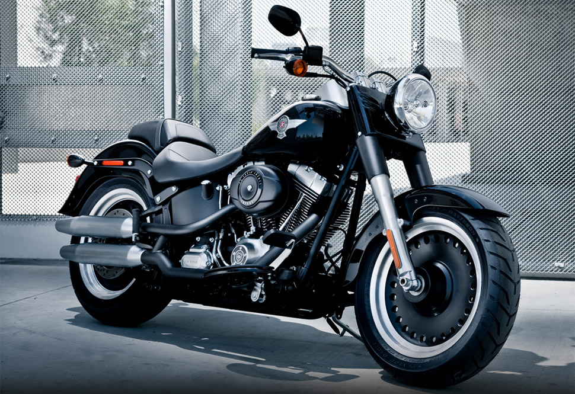
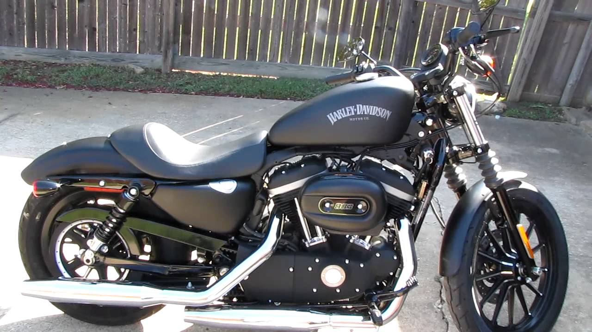
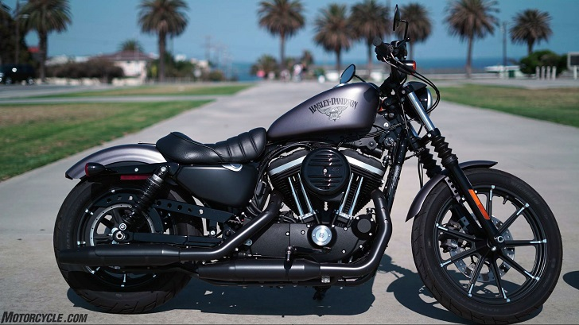
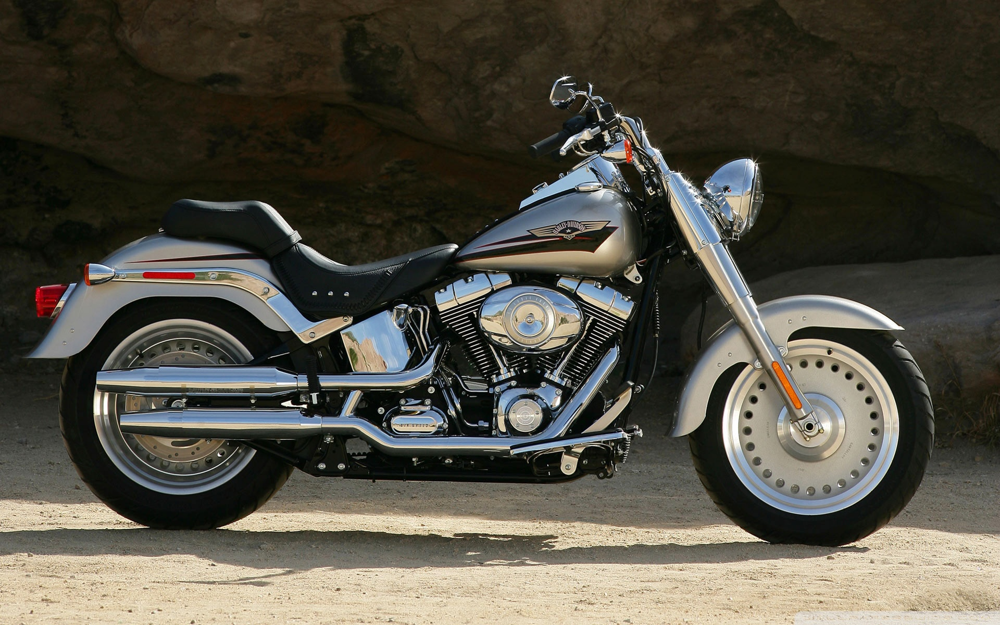

Harley-Davidson:Street 750
The Davidson Street 750 was the star two-wheeler at the 2014 Auto Expo where it was officially launched. It holds the distinction of being the first Davidson motorcycle to be manufactured in India and this was the key in its competitive pricing. The cruiser bike has been priced at Rs 4.91 lakh a(ex-showroom, Delhi) and it was recently updated with ABS as many people had complained the lack of it and new colour options. The Street 750 has a classic cruiser styling but unlike most American cruiser motorcycles that are drenched in chrome, the Street 750 adopts an all-black theme. It is a good looking bike but the compact dimension is something that doesn’t appeal many.Harley-Davidson’s latest entry-level machine, the Street 750, has been available on the other side of the Atlantic for a year but now the iconic American brand has bought it across the pond, given it a few upgrades and launched it in Europe.
Bike Social was in Barcelona to be among the first to ride it.
Priced very accessibly from only £5795 and available in UK dealerships from 18th September, the bike is firmly aimed at a younger audience in a bid to get them engaged with the brand earlier in their motorcycling life. That’s ‘Young and Urban’ in Harley-speak.
The bike slots into the Dark Custom range alongside the also newly revised Iron 883 and Forty Eight (both have new styling, wheels and suspension). At the launch, Harley-Davidson’s European PR Manager, Michael Carney, explained the theory behind Dark Custom, “It’s the underground contemporary face of Harley-Davidson, a movement. Don’t just think black, think blank canvas for customisation.”
A colourful array of vivid paint, brushed metal, plenty of carbon fibre and aftermarket goodies dressed on a dozen customised Street 750’s and Forty-Eight’s were the Dark Custom evidence surrounding us during the launch presentation. The skills on display were fresh from a European wide customising competition for 150 European Harley dealerships called ‘Battle of the Kings’.